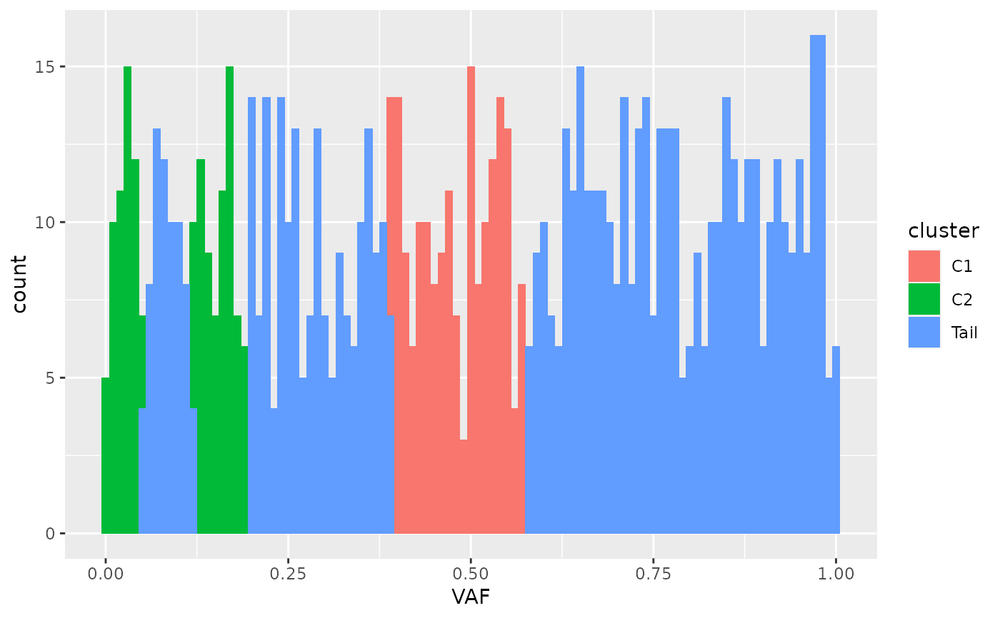

R/Clusters_denovo.R
Clusters_denovo.RdFor a new set of observations in the MOBSTER input format, the parameters and clusters of a MOBSTER fit are used to determine the assignments of the new points. MOBSTER density function is used to determine which cluster has the highest density for each observation, and the cluster label is computed accordingly.
Clusters_denovo(x, y)
| x | A MOBSTER fit. |
|---|---|
| y | A MOBSTER input dataset, which has to have a VAF numeric column without NAs. |
The data in y is augmented with a colum per mixture component reporting
the corresponding density value. A final colum `cluster` is also added reporting the
component name for the hard clustering assignment of the point.
#> #>data('fit_example', package = 'mobster') # Generate some randome numbers and assign them to the most likely mixture component new_assignments = Clusters_denovo(fit_example$best, data.frame(VAF = runif(1000)))#> #> #>#> #>#> # A tibble: 1,000 x 5 #> VAF Tail C1 C2 cluster #> <dbl> <dbl> <dbl> <dbl> <chr> #> 1 0.0808 0.977 -155. -4.23 Tail #> 2 0.834 -4.27 -92.5 -248. Tail #> 3 0.601 -3.54 -6.70 -95.6 Tail #> 4 0.157 -0.521 -77.9 0.730 C2 #> 5 0.00740 -Inf -469. -65.6 C2 #> 6 0.466 -2.97 1.92 -49.7 C1 #> 7 0.498 -3.11 1.78 -58.9 C1 #> 8 0.290 -1.90 -20.3 -11.7 Tail #> 9 0.733 -3.98 -39.3 -164. Tail #> 10 0.773 -4.10 -55.9 -192. Tail #> # … with 990 more rows# Plot a histogram coloured according to the clusters ggplot(new_assignments, aes(VAF, fill = cluster)) + geom_histogram(binwidth = 0.01)